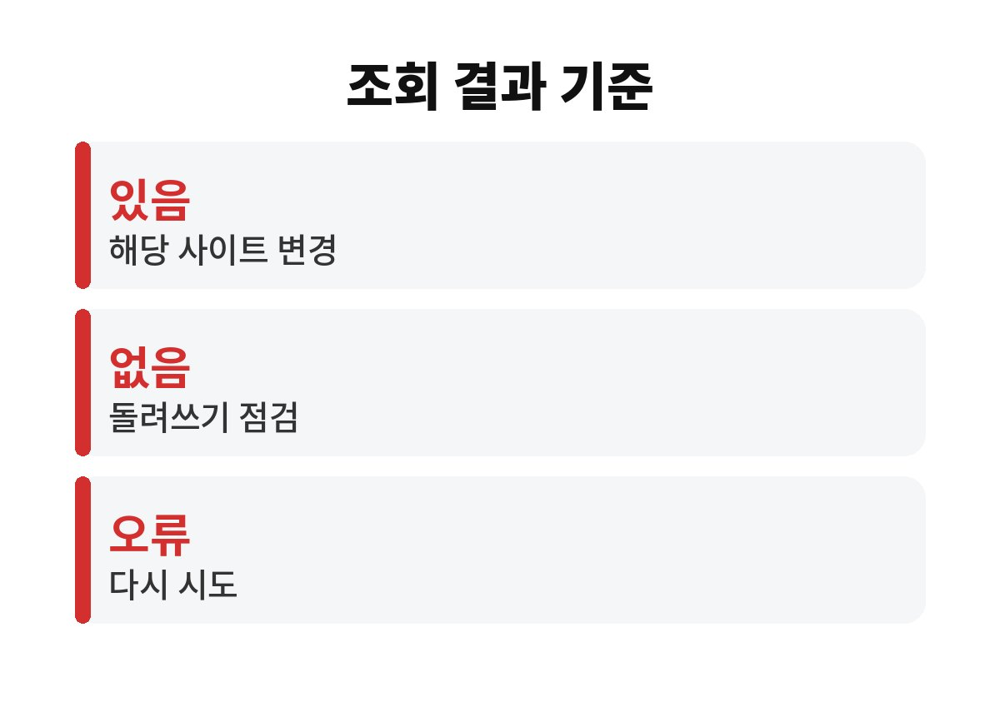
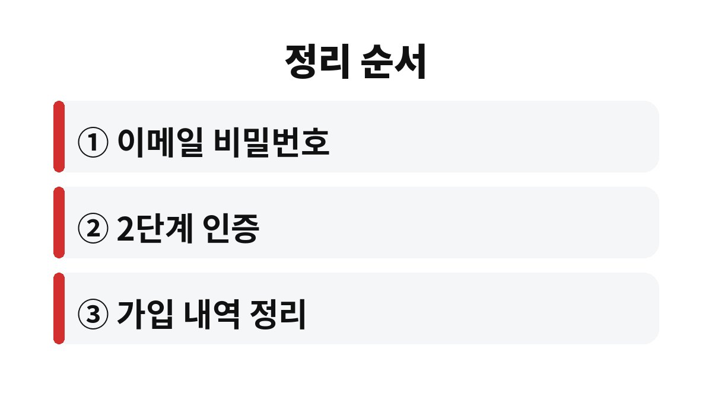

개인정보 유출 확인은 한국인터넷진흥원의 유출 조회 서비스로 조회하고, 결과와 상관없이 비밀번호와 로그인 방식을 함께 정리하는 순서로 하면 된다.
조회 서비스는 유출 사실을 알려 줄 뿐 계정을 대신 지켜 주지는 않는다.
그래서 조회보다 그 뒤에 무엇을 바꾸는지가 결과를 가른다.
조회 결과에 유출 내역이 없다는 것은 서비스가 파악한 범위 안에서 발견되지 않았다는 뜻이다.
파악되지 않은 유출까지 없다는 보증은 아니다.
결과가 깨끗해도 같은 비밀번호를 여러 곳에 쓰고 있다면 바꾸는 것이 낫다.
유출된 정보가 곧바로 피해로 이어지는 것은 아니다.
비밀번호를 바꾸고 2단계 인증을 켜면 유출된 비밀번호는 쓸모가 크게 줄어든다.
유출 소식에 놀라 모든 계정을 하루에 바꾸다 보면 새 비밀번호를 기억하지 못해 다시 막히는 일이 생긴다.
같은 아이디와 비밀번호를 쓰는 사이트가 여럿이면 하나가 뚫렸을 때 다른 곳도 시도된다.
개인정보 유출 확인 뒤에는 비밀번호를 돌려 쓴 사이트 목록부터 떠올려야 한다.
특히 이메일 주소를 아이디로 쓰는 사이트가 많을수록 이 문제는 커진다.
결과는 크게 세 갈래로 나뉘고, 갈래마다 우선 바꿀 것이 다르다.
나는 이 표를 메모장에 옮겨 두고 하나씩 지우며 처리했다.
장면을 하나 들어 본다.
쇼핑몰 한 곳의 유출 소식을 듣고 그 사이트 비밀번호만 바꿨는데, 같은 비밀번호를 쓰는 이메일 계정이 그대로 남아 있는 경우다.
비밀번호 재설정 메일은 이메일로 도착하므로 이메일이 뚫리면 다른 계정까지 줄줄이 넘어갈 수 있다.
그래서 표의 첫 칸에서 이메일 계정을 따로 챙기는 것이다.
| 조회 결과 | 먼저 할 일 | 이어서 할 일 |
|---|---|---|
| 유출 내역 있음 | 해당 사이트 비밀번호 변경 | 같은 비밀번호 쓴 곳 모두 변경 |
| 유출 내역 없음 | 돌려 쓰는 비밀번호 점검 | 2단계 인증 켜기 |
| 확인 불가·오류 | 공식 안내 페이지에서 다시 시도 | 주요 계정 로그인 기록 확인 |

새 비밀번호는 생일, 전화번호, 키보드 배열 같은 규칙을 피하고 문장 형태로 길게 만든다.
사이트마다 다르게 만들기 어렵다면 비밀번호 관리 앱을 쓰는 방법이 있다.
변경은 한 번에 끝내려 하지 말고 이메일과 금융처럼 피해가 큰 계정부터 순서대로 처리한다.

유출 사실을 알게 되면 사칭 문자나 전화가 이어질 수 있다.
문자 속 링크는 누르지 않고, 의심되면 한국인터넷진흥원 118 상담센터에 문의한다.
이 방법은 이미 금전 피해가 발생한 경우에는 맞지 않아서 그때는 해당 금융사와 경찰 신고가 먼저다.
조회에서 유출 내역이 확인된 사이트는 고객센터 공지에 유출 사실과 조치 안내가 올라와 있는지도 함께 본다.
비밀번호 관리 앱을 쓰면 사이트마다 다른 비밀번호를 만들기 쉽다.
다만 앱 자체의 마스터 비밀번호를 잃으면 복구가 어려우니 보관 방법까지 정해 둔다.
마스터 비밀번호는 종이에 적어 집 안에 두는 방법도 있다.
오늘은 이메일 계정 하나만 골라 비밀번호 변경과 2단계 인증을 끝내 두면 된다.
나머지 계정은 며칠에 나눠 처리해도 늦지 않다.
가입 내역 정리는 한 번에 끝나지 않으니 오래 쓰지 않은 사이트부터 하나씩 지운다.
조회 서비스 화면에서 안내하는 문구와 절차는 시기에 따라 바뀔 수 있으니 이용 전에 공식 페이지의 안내를 한 번 읽는다.
이 글의 순서는 일반 이용자 기준이라 기업 계정이나 회사 메일은 보안 담당자의 지침을 따른다.
참고 자료: 한국인터넷진흥원 「개인정보 유출 조회 서비스」 안내(2026년 11월 확인) · 개인정보보호위원회 「개인정보 포털」 가입 내역 확인 안내(2026년 11월 확인)
※ 2026년 기준 공식 안내를 바탕으로 정리한 글이며, 기기·앱 버전에 따라 메뉴 이름이 다를 수 있다.